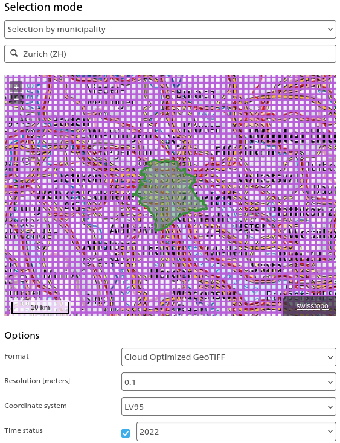

Benchmarking Examples
City of Zurich
The Swiss Federal Office of Topography (Swisstopo) provides a wealth of geospatial data for Switzerland, including high resolution aerial orthomosaics over the entire country. Unfortunately since the surveys capture 1/3 the country each year (and they are not seasonally consistent), it isn't possible to combine all the data together. However, for some "key" locations like Zurich, there are additional data sources that make it ideal for model testing:
- Aerial imagery
- Zurich maintains an inventory of municipal trees, the Baumkataster (Tree Cadastre) as well as a LIDAR-derived canopy height model for the city
- We can download administrative boundaries as a shapefile, also from Swisstopo
- Raw LIDAR data in GeoTIFF format can be found here
We use this data as an independent benchmark for our semantic segmentation models, as they were not trained on any of Swissimage's data (or any images of Zurich for that matter). Here's the procedure so you can replicate yourself:
Download the data
We need to download three things:
- The orthomosaic aerial images
- The canopy height map
- A boundary shapefile so we can limit our analysis to the right area
Swissimage provides an easy interface to download imagery. Select the 2022 data for Zurich as follows:

you will need to download a CSV of the image links, and once you've done that you can grab them all using wget:
mkdir swisstopo_zurich_2022
cd swisstopo_zurich_2022
wget -i /path/to/your/csv
to make life easier, create a virtual raster from the files:
gdalbuildvrt zurich_2022.vrt *.tif
we can then use this VRT directly for prediction (and we'll also get a VRT back from the pipeline).
Download the CHM from the link above, you should find a data folder in the download containing a file called baumhoehen_chm_2022.tif which is the CHM. You can now load the RGB raster and CHM into software like QGIS to verify that things look as you expect.
We provide a boundary shapefile in the repository, under benchmarks/swisstopo/zurich.geojson. Since the orthomosaics cover at least the area we specified, they extend outside the city limits and we'll need to restrict our analysis to within the boundary (where the CHM is valid).
If you have trouble downloading the CSV file, we provide a mirror at benchmarks/swisstopo/zurich_2022_images.csv.
Run the prediction
Now we're ready to predict. We use the normal prediction interface, for example:
tcd-predict --only-predict restor/tcd-segformer-mit-b0 \
/mnt/data/tcd/swisstopo_zurich_2022/zurich_2022.vrt \
/mnt/data/tcd/benchmarks/zurich/segformer-mit-b0 \
model.batch_size=8 \
postprocess.cache_folder=/mnt/data/.cache/tcd
The --only-predict flag is important as it tells the pipeline to not try and do any post-processing on the results, as they're going to be big. We set a cache_folder here to somewhere with a lot of disk space (20 GB approx.) to store the predictions during inference. Set the batch size as appropriate for the amount of VRAM that your GPU has available.
On a good GPU like an RTX3090, this shouldn't take too long - 20-30 minutes.
Check the results
This should have produced a bunch of GeoTIFFs in the output folder (above we set /mnt/data/tcd/benchmarks/zurich/segformer-mit-b0). The pipeline should also have built a virtual raster which you can load on top of the RGB orthomosaic:
Run evaluation
We provide a basic script that will perform a tiled evaluation between a source prediction and a ground truth file.
python evaluate.py semantic \
/mnt/data/tcd/benchmarks/zurich/segformer-mit-b0/overview.vrt \
/mnt/data/tcd/swisstopo/tree_height/2022/data/baumhoehen_chm_2022.tif \
/mnt/data/tcd/benchmarks/zurich/segformer-mit-b0/metrics.json \
--geometry /mnt/data/tcd/swisstopo/zurich.geojson
again, you'll need to update the paths to wherever things are on your system. The evaluation script will produce a JSON file with some high-level metrics about the prediction, for example:
{"accuracy": 0.9151492118835449, "dice": 0.8699694275856018, "f1": 0.8699694275856018, "iou": 0.7698635458946228, "precision": 0.8472338318824768, "recall": 0.8939588069915771}
and that's it! We've succesfully:
- Loaded a large orthomosaic
- Run a prediction job
- Compared our results to ground truth, within the specified area of interest
This approach should work with any pair of geo-referenced orthomosaic and ground truth map. The evaluation script handles warping between the two rasters so even though the LIDAR CHM is a lower resolution than our prediction, things still work out.